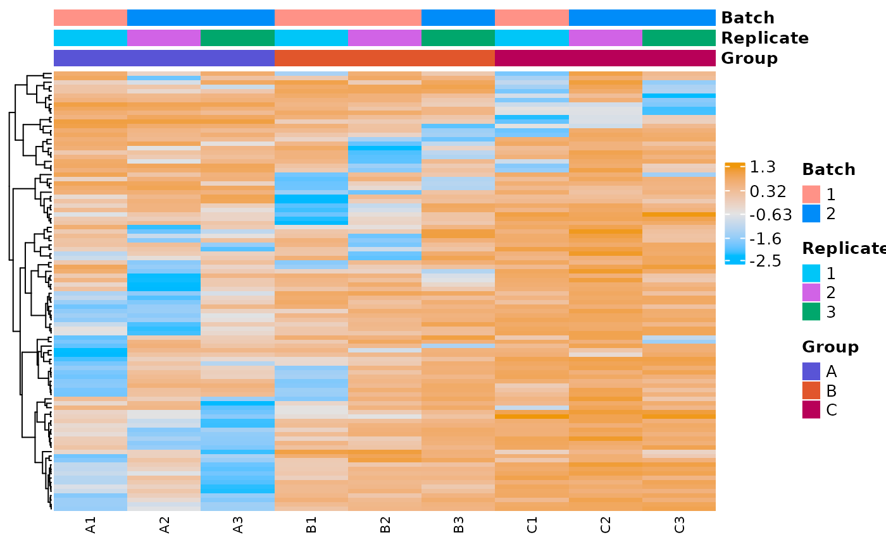

The first argument can be a multiOmicDataset object (moo) or a data.frame containing counts.
For a moo, choose which counts slot to use with count_type & (optionally) sub_count_type.
For a data.frame, you must also set sample_metadata.
All other arguments are optional.
Value
heatmap from ComplexHeatmap::Heatmap()
Details
The samples (i.e. the columns) are clustered in an unsupervised fashion based on how similar their expression profiles are across the included genes. This can help identify samples that are non clustering with their group as you might expect based on the experimental design.
By default, the top 500 genes by variance are used, as these are generally going to include those genes that most distinguish your samples from one another. You can change this as well as many other parameters about this heatmap if you explore the advanced options (see plot_expr_heatmap_dat).
Methods
| link to docs | class |
| plot_expr_heatmap_moo | multiOmicDataSet |
| plot_expr_heatmap_dat | data.frame |
Method Usage
# multiOmicDataset
plot_expr_heatmap(moo_counts,
count_type,
sub_count_type = NULL,
...)
# dataframe
plot_expr_heatmap(moo_counts,
sample_metadata,
sample_id_colname = NULL,
feature_id_colname = NULL,
group_colname = "Group",
label_colname = NULL,
samples_to_include = NULL,
color_values = c(
"#5954d6", "#e1562c", "#b80058", "#00c6f8", "#d163e6", "#00a76c",
"#ff9287", "#008cf9", "#006e00", "#796880", "#FFA500", "#878500"
),
include_all_genes = FALSE,
filter_top_genes_by_variance = TRUE,
top_genes_by_variance_to_include = 500,
specific_genes_to_include_in_heatmap = "None",
cluster_genes = TRUE,
gene_distance_metric = "correlation",
gene_clustering_method = "average",
display_gene_dendrograms = TRUE,
display_gene_names = FALSE,
center_and_rescale_expression = TRUE,
cluster_samples = FALSE,
arrange_sample_columns = TRUE,
order_by_gene_expression = FALSE,
gene_to_order_columns = " ",
gene_expression_order = "low_to_high",
smpl_distance_metric = "correlation",
smpl_clustering_method = "average",
display_smpl_dendrograms = TRUE,
reorder_dendrogram = FALSE,
reorder_dendrogram_order = c(),
display_sample_names = TRUE,
group_columns = c("Group", "Replicate", "Batch"),
assign_group_colors = FALSE,
assign_color_to_sample_groups = c(),
group_colors = c("indigo", "carrot", "lipstick", "turquoise", "lavender",
"jade", "coral", "azure", "green", "rum", "orange", "olive"),
heatmap_color_scheme = "Default",
autoscale_heatmap_color = TRUE,
set_min_heatmap_color = -2,
set_max_heatmap_color = 2,
aspect_ratio = "Auto",
legend_font_size = 10,
gene_name_font_size = 4,
sample_name_font_size = 8,
display_numbers = FALSE)See also
Other plotters:
plot_corr_heatmap(),
plot_histogram(),
plot_pca(),
plot_read_depth(),
print_or_save_plot()
Other heatmaps:
plot_corr_heatmap(),
plot_expr_heatmap_dat
Other moo methods:
batch_correct_counts(),
clean_raw_counts(),
diff_counts(),
filter_counts(),
filter_diff(),
normalize_counts(),
plot_corr_heatmap(),
plot_histogram(),
plot_pca(),
plot_read_depth(),
run_deseq2(),
set_color_pal()
Examples
# plot expression heatmap for a counts slot in a multiOmicDataset Object
moo <- multiOmicDataSet(
sample_metadata = as.data.frame(nidap_sample_metadata),
anno_dat = data.frame(),
counts_lst = list(
"raw" = nidap_raw_counts,
"norm" = list(
"voom" = as.data.frame(nidap_norm_counts)
)
)
)
p <- plot_expr_heatmap(moo, count_type = "norm", sub_count_type = "voom")
#> Warning: `arrange_()` was deprecated in dplyr 0.7.0.
#> ℹ Please use `arrange()` instead.
#> ℹ See vignette('programming') for more help
#> ℹ The deprecated feature was likely used in the MOSuite package.
#> Please report the issue at <https://github.com/CCBR/MOSuite/issues>.
#> [1] "The total number of genes in heatmap: 500"
#> Warning: The input is a data frame, convert it to the matrix.
#> Warning: argument `height` is not supported in pheatmap -> Heatmap translation,
#> skip it.
# customize the plot
plot_expr_heatmap(moo,
count_type = "norm", sub_count_type = "voom",
top_genes_by_variance_to_include = 100
)
#> [1] "The total number of genes in heatmap: 100"
#> Warning: The input is a data frame, convert it to the matrix.
#> Warning: argument `height` is not supported in pheatmap -> Heatmap translation,
#> skip it.

# plot expression heatmap for a counts dataframe
counts_dat <- moo@counts$norm$voom
plot_expr_heatmap(
counts_dat,
sample_metadata = nidap_sample_metadata,
sample_id_colname = "Sample",
feature_id_colname = "Gene",
group_colname = "Group",
label_colname = "Label",
top_genes_by_variance_to_include = 100
)
#> [1] "The total number of genes in heatmap: 100"
#> Warning: The input is a data frame, convert it to the matrix.
#> Warning: argument `height` is not supported in pheatmap -> Heatmap translation,
#> skip it.